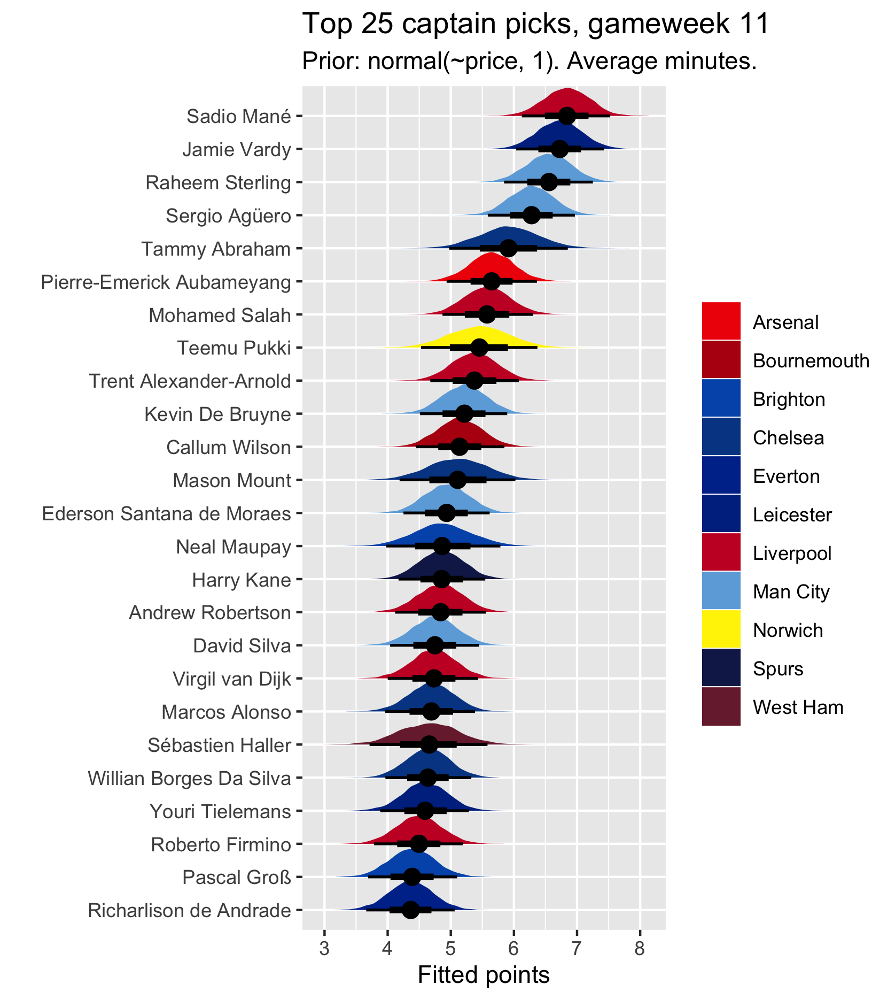
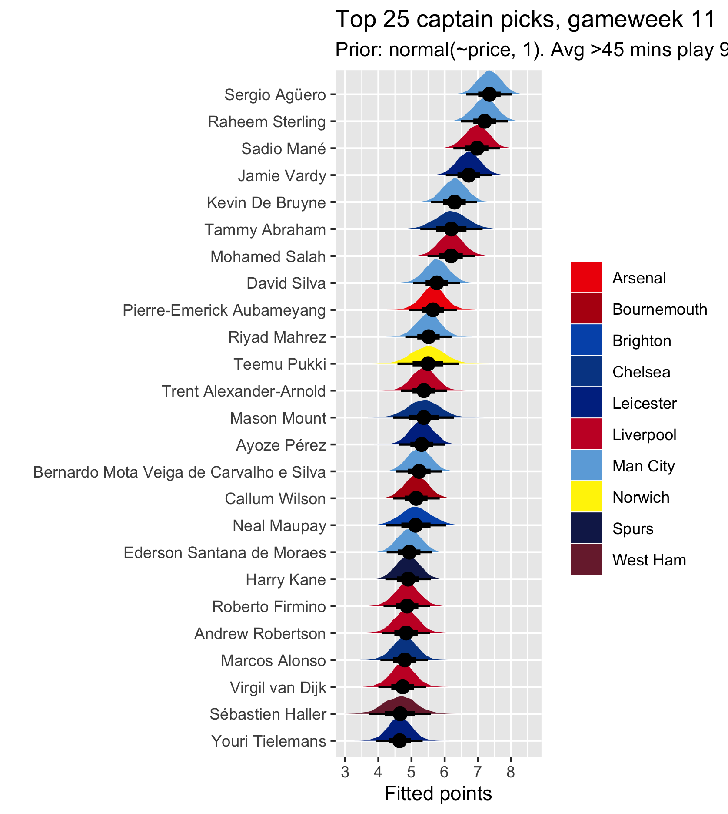

Another gameweek, another captaincy choice. Every week, I add the most recent gameweek data to my Bayesian multilevel model which predicts best captaincy choices based on the following logic, that I think most middling to good FPL players pretty much follow:
The workings of the model are explained more fully here and here.
I get my data from vaastav’s GitHub repo and fit a model with the following formula in R, using brms:
points | weights(weight) ~ player + opponent + home + minutes + (1 | mm(team_1, team_2))
So, it models points as a function of the player, their opponent, whether they are home or away, and the amount of minutes they play, with players nested within teams (of which there may be more than one over the course of the data). This model is then weighted so that more recent gameweeks count more for the calculation, with the most recent gameweek counting 1.5 times whereas the first gameweek I have (gameweek 25, last season) counts only once. Pretty much all of last season’s gameweeks are weighted around 1, and then there is a big jump at the start of the new season, and the weight increases fairly sharply each week until the most recent gameweek, to account for form.
To predict the best captains for the upcoming gameweek, I then fit the model to new data, containing each player, their upcoming opponent, etc, and get a fitted points prediction. However, my aim is not to predict points, but to model normally qualitative/heuristic captain selection methods quantitatively.
Despite this, following persistent requests for an expected/actual points comparison each week, I said last week I would start making a simple table of last week’s predicted top picks, how many points they ended up getting, and the actual highest point scorers. This enables us to see how often/infrequently the top picks according to the ‘captain-picking logic’ give meaningful returns and how often they are actually among the top point scorers. Remember, though, that more often than not the top scorers will feature players you would never dream of picking as your captain so this comparison is a bit weird. Also, I’m doing this for the version where players who have played >45 minutes average over the last 5 games are assumed to play 90 this week (see below).
| Top 10 in model | Points | Top 10 in reality | Points |
|---|---|---|---|
| Mané | 5 | Pulisic | 20 |
| Agüero | 1 | Pérez | 20 |
| Sterling | 11 | Vardy | 20 |
| Salah | 7 | Chilwell | 19 |
| Vardy | 20 | Krul | 16 |
| De Bruyne | 6 | Willian | 12 |
| Aubameyang | 2 | Tielemans | 11 |
| TAA | 1 | Sterling | 11 |
| Pukki | 2 | Milivojevic | 10 |
| Mahrez | 0 | Lascelles | 10 |
This week was a lot better than last for seemingly ‘sensible’ captain picks. Very few people will have considered captaining most of the actual top ten. I think few would have considered anyone other than Sterling and Vardy from among these. Obviously, this is because the top ten is really skewed by the Chelsea and Leicester matches, with six players from those two teams, and by Tim Krul’s penalty saving exploits. That being said, the model’s top ten did pretty well. Five out of ten of them got returns, and two of them featured in the actual top ten (Vardy and Sterling). Bear in mind, of course, that Agüero didn’t start and Mahrez didn’t play at all. Mahrez was also only in there because this was the forced 90 minute version of the model. He was nowhere near the top ten in the average minutes version. If the model knew Agüero and Mahrez were going to get the amount of minutes they got (very few and zero, respectively), they would have been nowhere near the top ten.
Note that most good teams – actually, probably all good teams and pretty much all bad teams too – will have one or more of the model’s top 6, who all returned bar Agüero, who we know is a risky pick because of Pep’s rotation. We can’t ask for much more from our captains than to get some sort of return. The captain-picking logic, I’d say, served us pretty well this week.
Every week I get questions about why Tammy Abraham isn’t among the top picks. This was because the data I was using included several gameweeks from last season in which Tammy was listed as a Chelsea player, but got no points because he never actually played. Basically, the model wasn’t fully recognising that this was entirely down to him not playing. I’ve now removed Tammy Abraham’s 2018/19 data so he is treated like, for example, Mount, as being a ‘new’ Chelsea player this season. This, as you’ll see below, serves him very well. Note the uncertainty in his prediction though (the width of the probability distribution). Like Mount, Pukki, etc, the relatively few gameweeks on which his estimate is based means we have less confidence in it.
A reminder that I report two versions of the model output. In the first, every player is assumed to play the same amount of minutes this week as their average minutes over the last five gameweeks. In the other (the one I prefer), every player with an average number of minutes over the last five greater than 45 (a half) is assumed to play 90 minutes (a whole game) this week. I’m open to suggestions on a better way to incorporate minutes into the output, but to me this seems fairly decent. I just can’t really factor in Pep’s wheel and other random variance in minutes.
The results for this gameweek are below. When we assume average minutes, Mané and Vardy come out on top because they keep getting around 90 minutes each match. When we assume 90 minutes for all players averaging over 45 minutes, though, this clearly favours Man City against Aston Villa, putting Agüero and Sterling at the top, boosting De Bruyne from tenth to fifth, and bringing both David Silva and Mahrez into the top ten. Obviously, the risk in picking these players is Pep’s rotation. Sterling looks likely to be fairly safe from this this week, though.
Vardy is in great FPL form and this has put him firmly among the top picks. Abraham gets in there too thanks to having his last season’s data deleted. Note, though, that there is considerable uncertainty in his fitted score relative to say, Salah. In the second model, where they are neck and neck, we should actually be more confident in Salah getting about 5-6 points than Abraham doing so. Salah would also still just about be in the top five were it not for Vardy’s form and Abraham’s new inclusion – although Auba would pip him to fifth place in the average minutes version.
It looks like, on balance, Sterling and Mané are probably the sensible picks this week. They have the highest average position across the two outputs (third and second, and first and third, respectively). It seems very likely that they both start (Mané in particular). If you’re confident in Agüero starting for some reason, then you should probably go for him, and if you want a slightly differential/left-field pick (although I imagine he’ll be fairly popular) then Vardy looks the best bet.


Matthew Barnfield